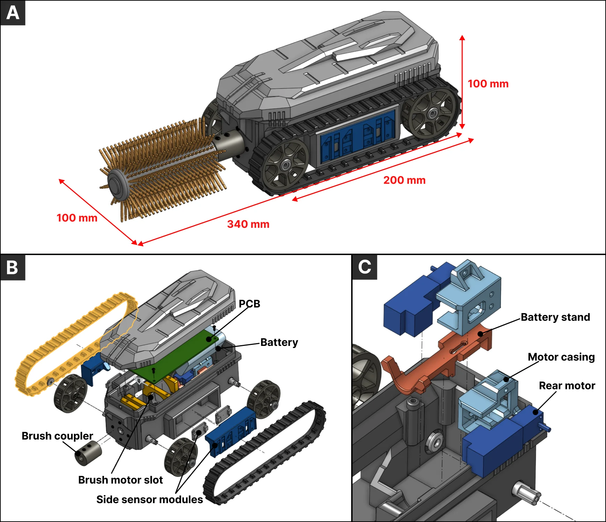
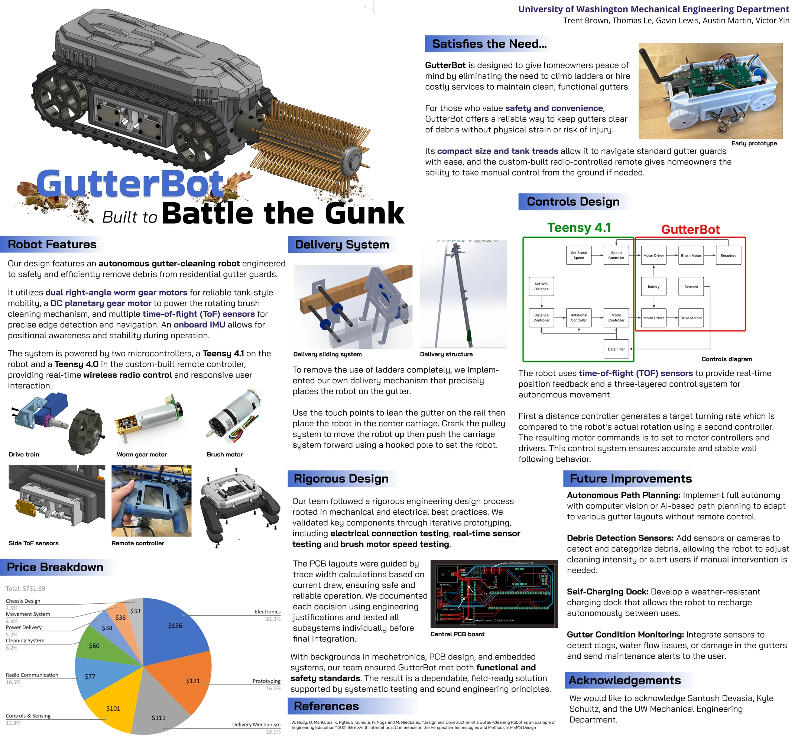
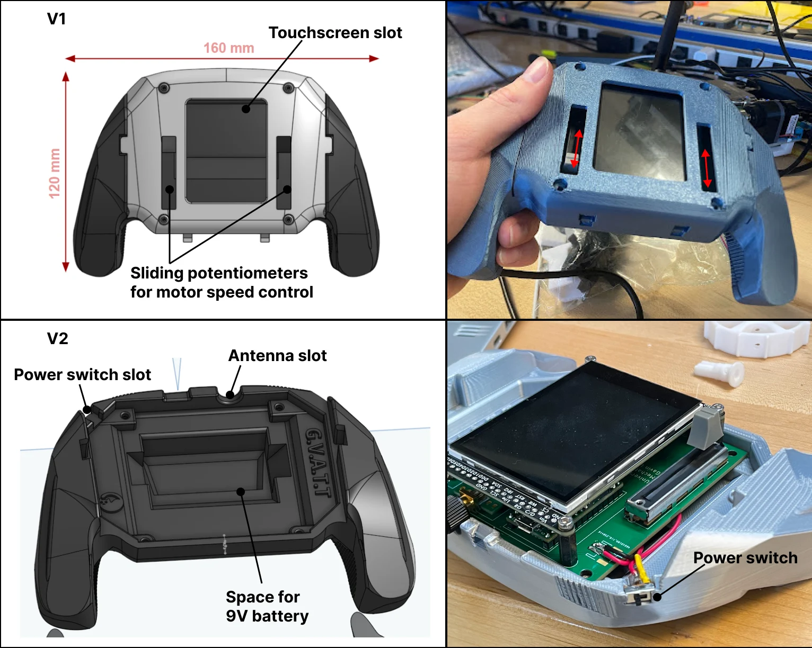
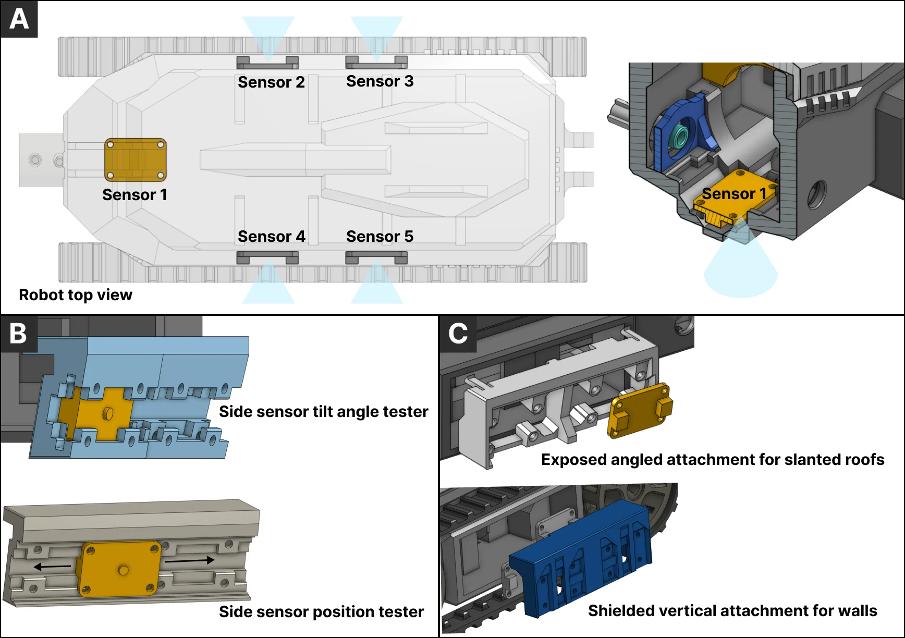
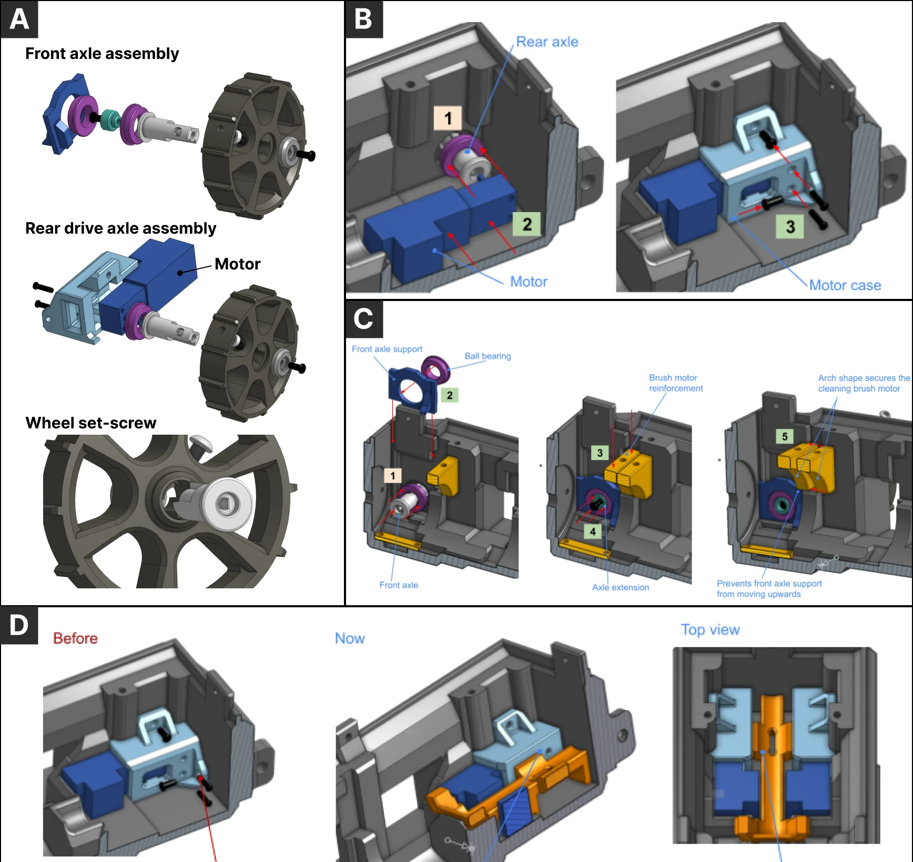

Senior Capstone: Autonomous Cleaning Robot
A compact tank-tread robot to clear rain gutters.
University of Washington · Jan ~ Jun 2025 · Team of 5
Skills
The project
We all know just how often it rains in the Pacific Northwest, which means lots and lots of leaves clogging drainage pipes. Our group took on this problem by designing an autonomous, remote-controllable robot that fits in a gutter.
It has a compact chassis with 2 high-torque motors powering tank treads, time-of-flight sensors with a PID controller to keep it on track, a powerful front brush to scoop out debris, and a radio controller for manual overrides.
What I did
- As the chassis and drivetrain lead, I held frequent discussions throughout prototyping to balance numerous needs and create a compact, strong chassis.
- I designed snap-fit modular parts that were easy to swap as we prototyped and upgraded components. This let us test in parallel without having to refabricate any major component, saving time and materials.
What I learned
This project got me to both show and grow my ability to think about complete electromechanical assemblies in 3D. Having designed complex LEGO assemblies, I really enjoyed the CAD process: balancing space, strength and ease of assembly. I distinctly remember how joyful I was when my teammate (who had the 3D printer) told me how perfectly my tolerancing came out in PLA. Nothing feels better than when parts just snap together and move like clockwork.
The real takeaway was poka-yoke: thinking about how others will assemble the design. During one of our final assemblies, we rushed and pressed the radio controller in too firmly, and its underside pins pierced the battery. We eventually tracked down a new Teensy microcontroller just hours before the final demo, but it was a real lesson about redundancy in assembly that I take with me into every new design.
all projects